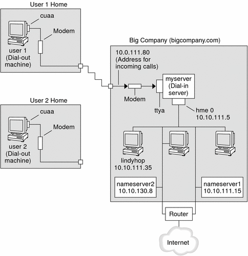

Previous
Previous
Planning for the PPP Link (Tasks)
Setting up a PPP link involves a set of discrete tasks, which includes planning tasks and other activities that are not related to PPP. This chapter explains how to plan for the most common PPP links, for authentication, and for PPPoE.
The task chapters that follow Chapter 16, Planning for the PPP Link (Tasks) use sample configurations to illustrate how to set up a particular link. These sample configurations are introduced in this chapter.
Topics that are covered include the following:
Overall PPP Planning (Task Map)
PPP requires planning tasks before you actually can set up the link. Moreover, if you want to use a PPPoE tunneling, you first have to set up the PPP link and then provide tunneling. The following task map lists the large planning tasks that are discussed in this chapter. You might need to use only the general task for the link type to be configured. Or you might require the task for the link, authentication, and perhaps PPPoE.
Table 16-1 Task Map for PPP PlanningTask | Description | For Instructions |
|---|---|---|
Plan for a dial-up PPP link | Gather information that is required to set up a dial-out machine or a dial-in server | |
Plan for a leased-line link | Gather information that is required to set up a client on a leased line | |
Plan for authentication on the PPP link | Gather information that is required to configure PAP or CHAP authentication on the PPP link | |
Plan for a PPPoE tunnel | Gather information that is required to set up a PPPoE tunnel over which a PPP link can run |
Planning a Dial-up PPP Link
Dial-up links are the most commonly used PPP links. This section includes the following information:
Planning information for a dial-up link
Explanation of the sample link to be used in Chapter 17, Setting Up a Dial-up PPP Link (Tasks)
Typically, you only configure the machine at one end of the dial-up PPP link, the dial-out machine, or the dial-in server. For an introduction to dial-up PPP, refer to Dial-up PPP Overview.
Before You Set Up the Dial-out Machine
Before you configure a dial-out machine, gather the information that is listed in the following table.
Note - The planning information in this section does not include information to be gathered about authentication or PPPoE. For details about authentication planning, refer to Planning for Authentication on a Link. For PPPoE planning, refer to Planning for DSL Support Over a PPPoE Tunnel.
Table 16-2 Information for a Dial-out Machine
Information | Action |
|---|---|
Maximum modem speed | Refer to documentation that was provided by the modem manufacturer. |
Modem connection commands (AT commands) | Refer to documentation that was provided by the modem manufacturer. |
Name to use for dial-in server at the other end of the link | Create any name that helps you identify the dial-in server. |
Login sequence that was required by dial-in server | Contact the dial-in server's administrator or ISP documentation if dial-in server is at the ISP. |
Before You Set Up the Dial-in Server
Before you configure a dial-in server, gather the information that is listed in the following table.
Note - The planning information in this section does not include information to be gathered about authentication or PPPoE. For details about authentication planning, refer to Planning for Authentication on a Link. For PPPoE planning, refer to Planning for DSL Support Over a PPPoE Tunnel.
Table 16-3 Information for a Dial-in Server
Information | Action |
|---|---|
Maximum modem speed | Refer to documentation that was provided by the modem manufacturer. |
User names of people who are permitted to call the dial-in server | Obtain the names of the prospective users before you set up their home directories, as discussed in How to Configure Users of the Dial-in Server. |
Dedicated IP address for PPP communications | Obtain an address from the individual at your company who is responsible for delegating IP addresses. |
Example of a Configuration for Dial-up PPP
The tasks to be introduced in Chapter 17, Setting Up a Dial-up PPP Link (Tasks) execute a small company's requirement to let employees work at home a few days a week. Some employees require the Solaris OS on their home machines. These workers also need to log in remotely to their work machines on the corporate Intranet.
The tasks set up a basic dial-up link with the following features:
The dial-out machines are at the houses of employees who need to call the corporate intranet.
The dial-in server is a machine on the corporate intranet that is configured to receive incoming calls from employees.
UNIX-style login is used to authenticate the dial-out machine. Stronger Solaris PPP 4.0 authentication methods are not required by the company`s security policy.
The next figure shows the link that is set up in Chapter 17, Setting Up a Dial-up PPP Link (Tasks).
Figure 16-1 Sample Dial-up LinkIn this figure, a remote host dials out through its modem over telephone lines to Big Company's Intranet. Another host is configured to dial out to Big Company but currently is inactive. The calls from remote users are answered in the order received by the modem that is attached to the dial-in server at Big Company. A PPP connection is established between the peers. The dial-out machine can then remotely log in to a host machine on the Intranet.
Where to Go for More Information About Dial-up PPP
Refer to the following:
To set up a dial-out machine, see Table 17-2.
To set up a dial-in machine, see Table 17-3.
To get an overview of dial-up links, see Dial-up PPP Overview.
To get detailed information about PPP files and commands, see Using PPP Options in Files and on the Command Line.